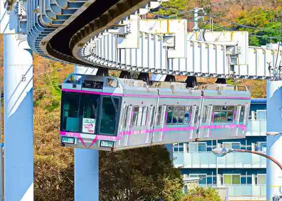
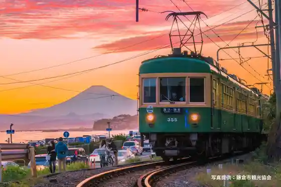
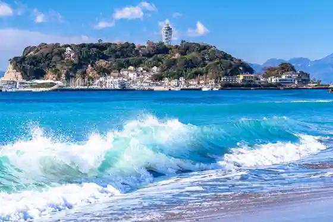
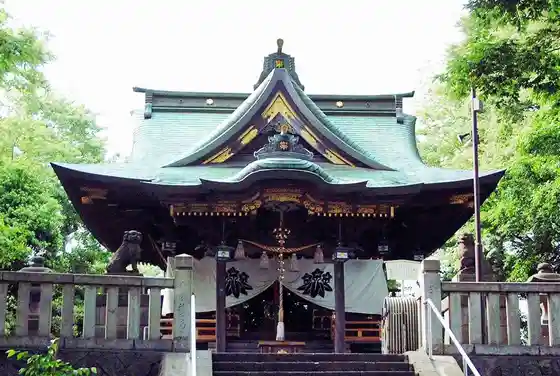

Shonan Mo no Reru
Fujisawa, Kanagawa · Official / source link

Ko no Den (Ko no Shima Dentetsu)
Fujisawa, Kanagawa · 0466-24-2713 · Official / source link

Ko no Shima
Fujisawa, Kanagawa · 0466-50-3531 · Official / source link

Shirohata Shrine
Fujisawa, Kanagawa · 0466-22-9210 · Official / source link

Ryuko Tera
Fujisawa, Kanagawa · 0466-25-7357 · Official / source link
Fujisawa Yama Muryo Hikari In Seijo Mitsudera (Yugyo Tera)
Fujisawa, Kanagawa · 0466-22-2063 · Official / source link
Fujisawa Hashi
Fujisawa, Kanagawa · Official / source link
Sakaigawa Saikuringurodo
Fujisawa, Kanagawa · 0466-50-3531 · Official / source link
Sakaigawa Yusuichi Koen Pogatto Park
Fujisawa, Kanagawa · 045-805-0223 · Official / source link
Satsumaya Main Shop (Sushi Tsukuri Experience)
Fujisawa, Kanagawa · 0466-23-2487 · Official / source link
Shin Ko no Shima Aquarium
Fujisawa, Kanagawa · 0466-29-9960 · Official / source link
Fujisawa Yado (Makita Honjin Ato)
Fujisawa, Kanagawa · Official / source link
Shin Hayashi Park (Sansaku Badotchingu)
Fujisawa, Kanagawa · 0466-27-4437 · Official / source link
Prefectural Shonan Kaigan Koen Safubirejji
Fujisawa, Kanagawa · 0466-34-9912 · Official / source link
Ejima Shrine
Fujisawa, Kanagawa · 0466-22-4020 · Official / source link
Chigogafuchi
Fujisawa, Kanagawa · 0466-50-3531 · Official / source link
Ko no Shima Fujimi Supotto
Fujisawa, Kanagawa · 0466-55-4141 · Official / source link
Koibito no Oka Ryu Koi no Kane
Fujisawa, Kanagawa · 0466-55-4141 · Official / source link
Ko no Shima Ai Land Supa
Fujisawa, Kanagawa · 0466-29-0688 · Official / source link
Ko no Shima Samueru Kokkingu En (Kyumei : Ko no Shima Botanical Garden)
Fujisawa, Kanagawa · 0466-23-2444 · Official / source link
Ko no Shima Iwaya
Fujisawa, Kanagawa · 0466-22-4141 · Official / source link
Odakyusen Katase Ko no Shima Eki
Fujisawa, Kanagawa · Official / source link
Ko no Shima Yottohaba
Fujisawa, Kanagawa · 0466-22-2128 · Official / source link
Ko no Shima Kita Ryokuchi Plaza
Fujisawa, Kanagawa · Official / source link
Katase Yama Park
Fujisawa, Kanagawa · Official / source link
Mosu Kinenhi
Fujisawa, Kanagawa · Official / source link
Yu no City Karasawa Mise
Fujisawa, Kanagawa · 0466-26-2614 · Official / source link
Oshimizu Sakaigawa Ajisairodo
Fujisawa, Kanagawa · Official / source link
Hasu Ike
Fujisawa, Kanagawa · Official / source link
Kyu Kondo Tei
Fujisawa, Kanagawa · 0466-23-2415 · Official / source link
Tsune Ritsu Tera
Fujisawa, Kanagawa · 0466-26-1911 · Official / source link
Jinko Tera Yokoana Kofun Gun
Fujisawa, Kanagawa · Official / source link
Kawana Goryo Shrine
Fujisawa, Kanagawa · Official / source link
Ko no Den Ko no Shima Eki
Fujisawa, Kanagawa · Official / source link
Endo Mahoroba Village Fujisawa Ebine Yamayuri Sono
Fujisawa, Kanagawa · 0466-48-8711 · Official / source link
Akiba Dai Bunka Gym
Fujisawa, Kanagawa · 0466-88-1111 · Official / source link
Shonan Fujisawa Chiho Oroshiuri Market
Fujisawa, Kanagawa · 0466-47-9772 · Official / source link
Yakuruto Honsha Shonan Keshohin Kojo
Fujisawa, Kanagawa · 0466-25-8960 · Official / source link
Fune Jizo Park
Fujisawa, Kanagawa · Official / source link
Shonandai Bunka Center (Kodomo Kan)
Fujisawa, Kanagawa · 0466-45-1500 · Official / source link
Oba Castle Park
Fujisawa, Kanagawa · 0466-46-7788 · Official / source link
Furutsu Park Chogo
Fujisawa, Kanagawa · 0466-43-5868 · Official / source link
Hikichi Kawa Ryokuchi (Tenjimbashi)
Fujisawa, Kanagawa · 0466-46-7788 · Official / source link
Kashiyama Inari to Itsukushima Sennin Chikara Benten Sha
Fujisawa, Kanagawa · Official / source link
Miyahara Buruberii Tsumi Tori Farm
Fujisawa, Kanagawa · Official / source link
Katase Subana Tori
Fujisawa, Kanagawa · Official / source link
Iseyama Park
Fujisawa, Kanagawa · Official / source link
Fujisawa Yado Koryu Kan
Fujisawa, Kanagawa · 0466-55-2255 · Official / source link
Ko no Shima Benzaiten Nakamise Tori
Fujisawa, Kanagawa · Official / source link
Ko no Shima Esuka
Fujisawa, Kanagawa · 0466-23-2444 · Official / source link
Koshin Do
Fujisawa, Kanagawa · Official / source link
Kura Mae Gyararii
Fujisawa, Kanagawa · 0466-25-9909 · Official / source link
Kinsha Yama Kannon Do
Fujisawa, Kanagawa · 0466-55-4141 · Official / source link
Kyu Inamoto Ya Gofuku Mise
Fujisawa, Kanagawa · Official / source link
Yaku Shrine
Fujisawa, Kanagawa · 0466-55-4141 · Official / source link
Hakusan Shrine
Fujisawa, Kanagawa · 0466-55-4141 · Official / source link
Joko Tera
Fujisawa, Kanagawa · 0466-55-4141 · Official / source link
Sogon Tera
Fujisawa, Kanagawa · 0466-22-7345 · Official / source link
Eisho Tera
Fujisawa, Kanagawa · 0466-22-5395 · Official / source link
Den Minamotoyoshitsune Kubi Sen Ido
Fujisawa, Kanagawa · Official / source link
Myo Zen Tera
Fujisawa, Kanagawa · 0466-24-3333 · Official / source link
Shintoku Tera
Fujisawa, Kanagawa · 0466-22-1247 · Official / source link
Chosei In
Fujisawa, Kanagawa · 0466-23-7708 · Official / source link
Sanno Shrine (Fujisawa)
Fujisawa, Kanagawa · Official / source link
Kanno In
Fujisawa, Kanagawa · 0466-55-4141 · Official / source link
Fune Tama Shrine (Funatama Shrine)
Fujisawa, Kanagawa · 0466-55-4141 · Official / source link
Utsu Haha Chi Shrine
Fujisawa, Kanagawa · 0466-48-9633 · Official / source link
Honkugenuma Shopping Street (Hasu Ike Tori)
Fujisawa, Kanagawa · Official / source link
Shonan Minato Lighthouse (Eiga (Hottorodo) Rogachi)
Fujisawa, Kanagawa · 045-211-1118 · Official / source link
Fujisawa Fujisawa Ukiyoe Kan
Fujisawa, Kanagawa · 0466-33-0111 · Official / source link
Miyaji Buta BBQ
Fujisawa, Kanagawa · Official / source link
Shonan Nagisa Park (Rentasaikuru)
Fujisawa, Kanagawa · Official / source link
Tsujido Seaside Park
Fujisawa, Kanagawa · 0466-34-0011 · Official / source link
Shonandai Park
Fujisawa, Kanagawa · 0466-46-7788 · Official / source link
Shonan Kaigan Park
Fujisawa, Kanagawa · 0466-55-2543 · Official / source link
Nihondaigaku Seibutsu Shigen Kagakubu Museum (Hone no Museum)
Fujisawa, Kanagawa · 0466-84-3892 · Official / source link
Shonan T-SITE
Fujisawa, Kanagawa · 0466-31-1515 · Official / source link
Katase Suwa Shrine
Fujisawa, Kanagawa · 0466-22-5843 · Official / source link
Iso Asobi (Ko no Shima)
Fujisawa, Kanagawa · 0466-22-4141 · Official / source link
Fujisawa Atosupesu
Fujisawa, Kanagawa · 0466-30-1816 · Official / source link
Orinpikku Kinen Funsui Ike
Fujisawa, Kanagawa · Official / source link
Fujisawa Yado Shotenkai
Fujisawa, Kanagawa · Official / source link
Terasumoru Shonan
Fujisawa, Kanagawa · 0466-38-1000 · Official / source link
Katase Coast
Fujisawa, Kanagawa · Official / source link
Ko no Shima Shiikyandoru
Fujisawa, Kanagawa · 0466-25-3525 · Official / source link
Kanagawa Prefectural Supotsu Center
Fujisawa, Kanagawa · 0466-81-2570 · Official / source link
Kaijokotsu (Kanagawa Shiiraido)
Fujisawa, Kanagawa · Official / source link
Ko no Shimanaka Tsu Miya Plaza
Fujisawa, Kanagawa · 0466-22-4141 · Official / source link
4 Sutairu
Fujisawa, Kanagawa · 050-5592-5922 · Official / source link
Shirasuto Isebi no Chube
Fujisawa, Kanagawa · 0466-27-1455 · Official / source link
Restaurant NORI et NOJI
Fujisawa, Kanagawa · 0466-52-6247 · Official / source link
Shonan Shirasu Hamano Suisan
Fujisawa, Kanagawa · 0466-22-5931 · Official / source link
Shirasu Tonya Tobitcho Ko no Shima Main Shop
Fujisawa, Kanagawa · 0466-23-0041 · Official / source link
Maruyaki Kitakosembei no Asahi Main Shop
Fujisawa, Kanagawa · 0466-23-1775 · Official / source link
Shuterun
Fujisawa, Kanagawa · 0466-26-0727 · Official / source link
Robotto Kigyo Koryu Kyoten (Roborinku)
Fujisawa, Kanagawa · 0466-90-3490 · Official / source link
Hikichi Kawa Shinsui Park
Fujisawa, Kanagawa · Official / source link
Oba Castle Park Sakura (Fujisawa)
Fujisawa, Kanagawa · Official / source link
Tsujido Beach
Fujisawa, Kanagawa · 0466-24-4141 · Official / source link
Katase Nishihama Kugenuma Beach
Fujisawa, Kanagawa · 0466-24-4141 · Official / source link
Katase Higashihama Beach
Fujisawa, Kanagawa · 0466-24-4141 · Official / source link
Kanagawa Prefectural Tsujido Seaside Park Jambopuru
Fujisawa, Kanagawa · 0466-35-7347 · Official / source link
Shonan Fujisawa Opa
Fujisawa, Kanagawa · 0466-26-8111 · Official / source link